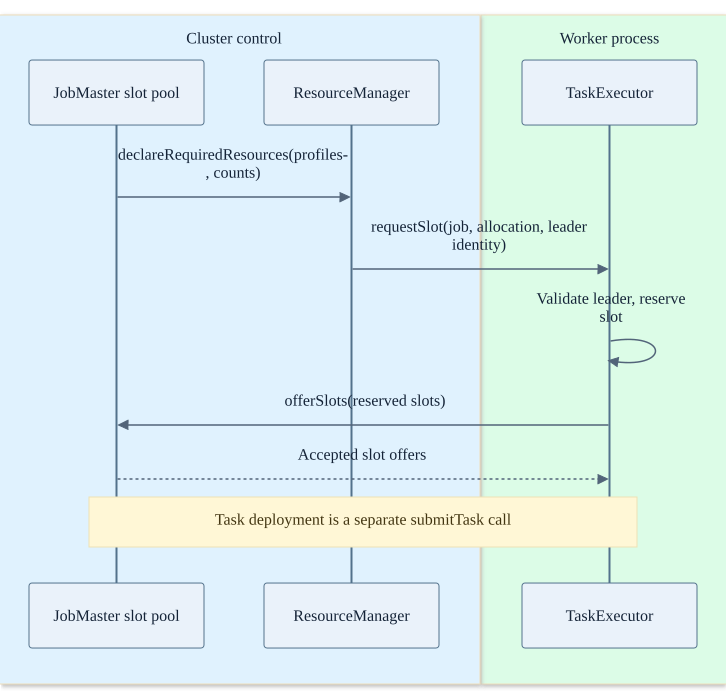
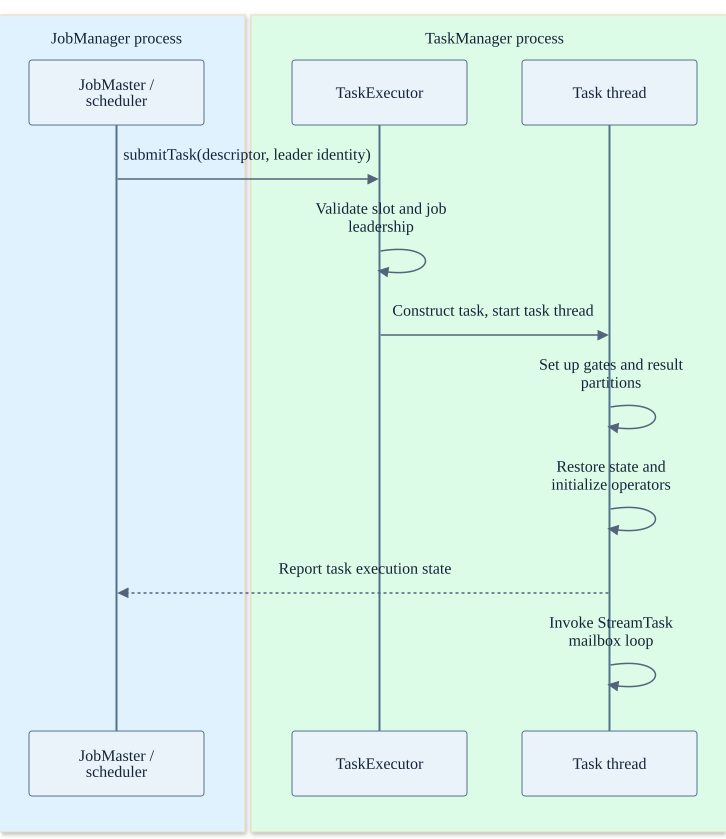

Chapter 05 · source-backed walkthrough
Flink: cluster components and RPCs
A Flink cluster has orchestration services and worker processes. A submitted job becomes task attempts in TaskManager slots. Records travel through operator calls or shuffle channels; checkpoint commands and acknowledgements use control RPCs.
Before the detail
The mental model
JobMaster schedules work; TaskExecutor is a worker control endpoint; a task thread runs operators. A slot is an allocation unit, not another process.
Worked example: connect the system view to the code
Two TaskManagers can each run several task attempts. Losing one JVM loses all its tasks. The replacement needs new allocations and durable checkpoint state; it does not receive the old JVM heap.
- Request resources
The job slot pool declares required resources.
- Offer allocated slots
TaskExecutor offers slots to the JobMaster.
- Launch an attempt
TaskExecutor validates and accepts the deployment descriptor.
Illustrative reasoning example using this chapter's source scope; not a recorded deployment or executed experiment.
Does task-submission acknowledgement certify completed processing?
No. It acknowledges deployment handling. Task execution, snapshot acknowledgement and sink completion happen later.
Choose a reading path · Terms and progress boundaries · Clarity review
01
Who runs where?
The Dispatcher accepts submitted jobs and manages per-job execution leadership. A JobMaster owns a job scheduler, execution graph, source / operator coordinators and checkpoint coordinator. The ResourceManager coordinates available worker resources. A TaskManager process exposes a TaskExecutor RPC endpoint and hosts task slots, task threads, network buffers and state backends.
A slot is a scheduling / resource-sharing unit, not a separate operating-system process. Several subtasks or chained operators may share a worker. A task attempt is the restartable execution identity. Changing that identity protects against late acknowledgements from an obsolete attempt.
Source enumerators and some coordinator user code run in the control-side process. The statement that a JobManager never runs any user code would be too broad. The ordinary per-record operator functions run inside task attempts on TaskManagers.
Flink process boundaries
Worker resource allocation and per-job scheduling are separate responsibilities. Deployment mode determines whether jobs share these cluster services.

| Boundary | Mechanism | What crosses it |
|---|---|---|
| Client -> cluster | REST / deployment-specific client submission | Job graph, job resources and lifecycle requests. |
| JobMaster -> ResourceManager | declareRequiredResources RPC | Resource profiles and counts; allocation is separate from task deployment. |
| ResourceManager -> TaskExecutor | requestSlot RPC | Reserve worker resources for a job and allocation identity. |
| TaskExecutor -> JobMaster | offerSlots RPC | Offer reserved slots directly to the job slot pool. |
| JobMaster -> TaskExecutor | Flink RPC gateway; Pekko-based runtime transport in this tree | TaskDeploymentDescriptor, checkpoint trigger, completion and operator events. |
| Task -> same-task operator | Direct call / operator chain | StreamRecord and control events; no network RPC. |
| TaskManager -> TaskManager | Netty shuffle connections | Serialized buffers, records and in-band checkpoint barriers. |
| Task -> checkpoint storage | Configured filesystem / storage connector | State chunks and metadata referenced by checkpoint handles. |
02
Deployment and task recovery lifecycle
The JobMaster slot pool declares resource requirements to the ResourceManager. The ResourceManager arranges worker-slot allocation through requestSlot. After establishing its job connection, the TaskExecutor offers reserved slots directly to the JobMaster. This offer is not a ResourceManager-to-JobMaster message.
The scheduler obtains logical slots and deploys a descriptor for each execution attempt. TaskExecutor checks job leadership and slot ownership before creating the Task. The task thread creates its invokable, initializes network partitions / input gates, restores state and runs the StreamTask.
Heartbeats and task failure reports detect lost workers or failed attempts. Detection is not instantaneous: shorter timeouts accelerate failover but increase false suspicion under pauses or overload. The scheduler chooses a failover scope, cancels affected attempts, restores state and deploys new attempts. Depending on topology and strategy this may be a region or a larger portion of the job.
Resource allocation before deployment
This is the connected-worker path. Worker provisioning, registration and retry messages are omitted; a requested slot must still be accepted by the job slot pool.

A task starts on a worker
The task descriptor crosses RPC; subsequent operator processing runs inside the worker.

03
Availability and durability boundaries
A TaskManager disk failure can destroy its local working state. Durable checkpoint data must survive elsewhere if recovery is to survive host loss. State backend selection describes working-state representation; checkpoint storage describes durable snapshots. Local RocksDB files by themselves are not a completed remote checkpoint.
A JobManager failover needs configured high-availability services and retained job / checkpoint metadata. A cluster process restart without the appropriate persisted metadata and storage access is not equivalent to automatic recovery. Source retention must also still cover the restored source positions.
Flink can keep processing while a checkpoint is materializing asynchronously, but a checkpoint-aware sink may withhold committed visibility. Long checkpoints therefore affect both recoverability and end-to-end freshness even if the task CPU is fast.
Inside the implementation
These excerpts come directly from the code paths used above. Expand a component to move from the system view into its implementation.
flink-requirements DeclarativeSlotPoolService.java:305
The JobMaster slot pool declares required resources to the ResourceManager.
flink/flink-runtime/src/main/java/org/apache/flink/runtime/jobmaster/slotpool/DeclarativeSlotPoolService.java · 07805482705f
304 resourceRequirements ->
305 resourceManagerGateway.declareRequiredResources(
306 jobMasterId, resourceRequirements, rpcTimeout));
307
308 declareResourceRequirements(declarativeSlotPool.getResourceRequirements());
309 }
310
311 private void declareResourceRequirements(Collection<ResourceRequirement> resourceRequirements) {
312 assertHasBeenStarted();
313
314 resourceRequirementServiceConnectionManager.declareResourceRequirements(
315 ResourceRequirements.create(
316 jobId, applicationId, jobManagerAddress, resourceRequirements));
317 }
318 flink-slot-request TaskExecutor.java:1197
The ResourceManager requests allocation on a TaskExecutor, which validates the ResourceManager identity.
flink/flink-runtime/src/main/java/org/apache/flink/runtime/taskexecutor/TaskExecutor.java · 07805482705f
1196 @Override
1197 public CompletableFuture<Acknowledge> requestSlot(
1198 final SlotID slotId,
1199 final JobID jobId,
1200 final ApplicationID applicationId,
1201 final AllocationID allocationId,
1202 final ResourceProfile resourceProfile,
1203 final String targetAddress,
1204 final ResourceManagerId resourceManagerId,
1205 final Duration timeout) {
1206 // TODO: Filter invalid requests from the resource manager by using the
1207 // instance/registration Id
1208
1209 try (MdcCloseable ignored = MdcUtils.withContext(MdcUtils.asContextData(jobId))) {
1210 log.info(flink-slot-offer TaskExecutor.java:1761
The TaskExecutor offers reserved slots directly to the JobMaster, not through the ResourceManager.
flink/flink-runtime/src/main/java/org/apache/flink/runtime/taskexecutor/TaskExecutor.java · 07805482705f
1760 CompletableFuture<Collection<SlotOffer>> acceptedSlotsFuture =
1761 jobMasterGateway.offerSlots(
1762 getResourceID(),
1763 reservedSlots,
1764 taskManagerConfiguration.getRpcTimeout());
1765
1766 acceptedSlotsFuture.whenCompleteAsync(
1767 handleAcceptedSlotOffers(
1768 jobId, jobMasterGateway, jobMasterId, reservedSlots, slotOfferId),
1769 getMainThreadExecutor(jobId));
1770 } else {
1771 log.debug("There are no unassigned slots for the job {}.", jobId);
1772 }
1773 }
1774 flink-deploy TaskExecutor.java:663
TaskExecutor accepts a deployment descriptor and starts a task.
flink/flink-runtime/src/main/java/org/apache/flink/runtime/taskexecutor/TaskExecutor.java · 07805482705f
662 @Override
663 public CompletableFuture<Acknowledge> submitTask(
664 TaskDeploymentDescriptor tdd, JobMasterId jobMasterId, Duration timeout) {
665
666 final JobID jobId = tdd.getJobId();
667 JobInformation jobInformation = null;
668 try {
669 jobInformation = tdd.getJobInformation();
670 } catch (IllegalStateException ignored) {
671 // Expected when job information is offloaded to blob storage and not yet loaded.
672 } catch (IOException | ClassNotFoundException e) {
673 log.debug("Could not deserialize job information for early MDC enrichment", e);
674 }
675 try (MdcCloseable ignored =
676 MdcUtils.withContext(flink-checkpoint CheckpointCoordinator.java:1360
Completed checkpoint storage precedes notifications.
flink/flink-runtime/src/main/java/org/apache/flink/runtime/checkpoint/CheckpointCoordinator.java · 07805482705f
1359 */
1360 private void completePendingCheckpoint(PendingCheckpoint pendingCheckpoint)
1361 throws CheckpointException {
1362 final long checkpointId = pendingCheckpoint.getCheckpointID();
1363 final CompletedCheckpoint completedCheckpoint;
1364 final CompletedCheckpoint lastSubsumed;
1365 final CheckpointProperties props = pendingCheckpoint.getProps();
1366
1367 completedCheckpointStore.getSharedStateRegistry().checkpointCompleted(checkpointId);
1368
1369 try {
1370 completedCheckpoint = finalizeCheckpoint(pendingCheckpoint);
1371
1372 // the pending checkpoint must be discarded after the finalization
1373 Preconditions.checkState(pendingCheckpoint.isDisposed() && completedCheckpoint != null);Test source inspected or located, not executed: CheckpointCoordinatorRestoringTest.java
flink-network CreditBasedPartitionRequestClientHandler.java:61
Remote input credits and partition requests use the shuffle data transport.
flink/flink-runtime/src/main/java/org/apache/flink/runtime/io/network/netty/CreditBasedPartitionRequestClientHandler.java · 07805482705f
60 */
61 class CreditBasedPartitionRequestClientHandler extends ChannelInboundHandlerAdapter
62 implements NetworkClientHandler {
63
64 private static final Logger LOG =
65 LoggerFactory.getLogger(CreditBasedPartitionRequestClientHandler.class);
66
67 /** Channels, which already requested partitions from the producers. */
68 private final ConcurrentMap<InputChannelID, RemoteInputChannel> inputChannels =
69 new ConcurrentHashMap<>();
70
71 /** Messages to be sent to the producers (credit announcement or resume consumption request). */
72 private final ArrayDeque<ClientOutboundMessage> clientOutboundMessages = new ArrayDeque<>();
73
74 private final AtomicReference<Throwable> channelError = new AtomicReference<>();flink-barrier SubtaskCheckpointCoordinatorImpl.java:289
Pre-barrier preparation, barrier broadcast, state snapshot and async report.
flink/flink-runtime/src/main/java/org/apache/flink/streaming/runtime/tasks/SubtaskCheckpointCoordinatorImpl.java · 07805482705f
288 @Override
289 public void checkpointState(
290 CheckpointMetaData metadata,
291 CheckpointOptions options,
292 CheckpointMetricsBuilder metrics,
293 OperatorChain<?, ?> operatorChain,
294 boolean isTaskFinished,
295 Supplier<Boolean> isRunning)
296 throws Exception {
297
298 checkNotNull(options);
299 checkNotNull(metrics);
300
301 // All of the following steps happen as an atomic step from the perspective of barriers and
302 // records/watermarks/timers/callbacks.Test source inspected or located, not executed: TaskCheckpointingBehaviourTest.java